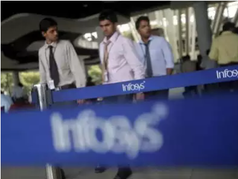
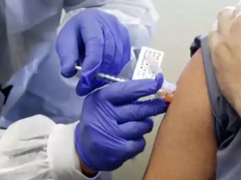

Hindustan Times
Infosys, Wipro see sharp pick up in growth in Q3
Clients’ demands for a digital overhaul of their businesses – to mitigate disruptions of the kind they suffered during the pandemic – is leading to a surge in orders for Indian IT services companies. It’s also enabling the latter to quickly lift themselves from the early pandemic lows.
In a seasonally weak quarter, which is marked by the holiday season and furloughs, Infosys grew by 5.3% sequentially, while Wipro grew by 3.4%, which nearly met the top end of its revenue guidance for the quarter. Year-on-year growth rates are significantly better than in the first two quarters, and look to be fast heading towards pre-Covid levels.
“We are ready to participate in all these (large deals) and have our capabilities ready. The large deal wins give us confidence for the quarter ahead,” Infosys CEO Salil Parekh, who completed three years at the helm, said.
Where coronavirus vaccines will be produced
According to data analytics company Airfinity, the US has the capability to produce almost 4.7 billion Covid-19 vaccine doses up until the end of 2021. India also has a high capability to produce the vaccine at more than 3 billion possible doses, according to the findings published by Deutsche Welle.
India is home to the largest vaccine manufacturer in the world, the Serum Institute of India. The company produces almost 1.4 billion doses annually, as per 2015 figures which are the latest available. In comparison, the same report by the Access to Medicine Foundation showed that Sanofi produced 1 billion vaccine doses that same year while GlaxoSmithKline made almost 700 million.
Pfizer kept their numbers confidential. Despite the high number of doses, the Serum Institute earned far less with their vaccines due to the fact that most of them are sold at a low price domestically. In 2015, the company had revenues of just approximately $566 million, while Sanofi and Pfizer made between 35 and almost 50 billion, respectively.
Delhi reports 850 bird mortality, 468 complaints related to bird flu
As many as 850 cases of bird deaths due to avian influenza have been reported in the national capital, Delhi's animal husbandry department said here on Thursday. As per official data, till 10 am on Thursday, the animal husbandry department has received 468 more 'complaints related to bird flu'.
The department has further deployed 11 surveillance teams who are working to reach at the spot to collect samples from where complaints are made. Speaking to ANI, Rakesh Singh, director, animal husbandry department, Delhi, said his department has directed people not to touch the dead birds with bare hands, and in absence of proper gears, they must wrap their hands with a polythene bag.
According to Deutsche Welle, AstraZeneca plans to produce 1 billion doses of the so-called “University of Oxford” vaccine – a cheap and easy to store variety – at Serum Institute facilities in India. A second, domestically made vaccine, Covaxin, has also been approved already in the country despite stage III trials still underway and efficacy number not having been published.
47% find WhatsApp's updated privacy policy unacceptable
WhatsApp updated its privacy policy and terms of service on Monday, expanding how the messaging platform will share user data with other Facebook-owned and third-party apps. The update comes with a condition that if the user refuses to share data with Facebook, they will have to quit WhatsApp. The new terms of service are set to take effect a month from now, on February 8.
With the debate raging over WhatsApp’s updated privacy policy in India, a whopping 47% respondents of an Inshorts poll said that they would not accept the policy and would look for alternatives of the messaging app. On the other hand, around 14% of the respondents did not see any privacy concerns and said that they would accept and continue using Whatsapp. Over 39% of the respondents said that they would accept the policy as they were not aware of any suitable alternatives at the moment.
Sreesanth gives 'death stare' to batsman, gets hit for 2 sixes in next 2 balls
Kerala's 37-year-old pacer Sreesanth gave Mumbai's 19-year-old opener Yashasvi Jaiswal a 'death stare' after the latter came down the pitch and missed a delivery during their Syed Mushtaq Ali Trophy match. Sreesanth was seen going close to the batsman and staring at him before going back to run-up. Jaiswal went on to hit two sixes off Sreesanth's next two deliveries.
There was a mini duel that took place in the match between Kerala and Mumbai on January 13th, 2021. 19-year-old Yashasvi Jaiswal got the better of Sreesanth, a man who is almost double his age. Off the first ball of the 6th over in the Mumbai innings, Sreesanth bowled a length delivery just outside off stump. Jaiswal went for a big heave but failed to make any connection. Sreesanth went and had a small ‘chat’ with the young left-hander after the delivery. Jaiswal’s reply would have definitely rattled the veteran pacer. Off the next delivery bowled by Sreesanth, Jaiswal cleared his front leg out of the way and smashed the ball into orbit.
Google completes $2.1 billion acquisition of Fitbit
Google on Thursday said it has completed the acquisition of Fitbit, over a year after the deal was first announced. The European Union, which approved the $2.1-billion deal in December, had raised concerns over Google’s market power and the use of people’s health data in targeted advertising. Fitbit Co-founder James Park reiterated today that Fitbit would continue to be device-agnostic.
The deal had triggered concerns over Google's market power and the use of people's health data in targeted advertising.The companies won antitrust approval from the European Union in December after Google agreed to restrictions on how it will use customers' health related data. The companies won antitrust approval from the European Union in December after Google agreed to restrictions on how it will use customers' health related data.
Bengaluru world's fastest growing tech hub, Mumbai 6th
Bengaluru has emerged as the world's fastest growing mature tech ecosystem since 2016, with Mumbai coming in at sixth place, according to Dealroom.co data analysed by London & Partners. Investment in Bengaluru grew 5.4 times from $1.3 billion in 2016 to $7.2 billion in 2020, the report said. Bengaluru also ranked sixth for the most tech venture capitalist investments globally.
Bengaluru, the IT capital of India with around 10 million populations, has emerged as the world's fastest-growing mature tech ecosystem since 2016, followed by the European cities of London, Munich, Berlin and Paris. India's financial centre Mumbai has ranked sixth, as per the new research released in London on 14 January. The UK capital of London registered an impressive three times growth between 2016 and 2020, rising from USD 3.5 billion to USD 10.5 billion.

PM Modi to launch COVID-19 vaccination drive on January 16 at 10:30 am
PM Narendra Modi will launch pan-India COVID-19 vaccination drive on January 16 at 10:30 am via video conferencing. Total 3,006 session sites across all states and UTs will be virtually connected during the launch, the PMO said. Around 100 beneficiaries will be vaccinated at each session site on January 16, it added.
This will be the world's largest vaccination programme covering the entire length and breadth of the country and all preparations are in place to initiate the programme on the principles of 'Jan Bhagidari', the Prime Minister's Office said in a statement. "This deal has always been about devices, not data, and we've been clear since the beginning that we will protect Fitbit users' privacy," Google said in a blog post on Thursday. Fitbit, once the leader in the wearable devices market, has lost market share to Apple, Xiaomi, Samsung and Huawei in recent years.
India raises issue of inaccurate depiction of map with WHO; calls for removal
India has raised the issue of the inaccurate depiction of the nation's map, showing UTs of J&K and Ladakh separately, by the WHO. The matter was raised by Indian envoy to UN in Geneva, Indra Mani Pandey, with WHO's Director-General Tedros Adhanom. The Indian diplomat expressed his "deep displeasure" over the inaccurate map and called for its "immediate removal".
The matter was raised by Indian envoy to United Nations in Geneva, Indramani Pandey, with WHO DG Dr Tedros Adhanom Ghebreyesus. This is the third time India has raised the matter with WHO in a matter of a month. Previously, there were two times the Indian mission to the UN in Geneva had written to WHO DG, and now with the envoy himself raising it. The Indian Envoy in the letter pointed this out, saying, "I draw your attention to our previous messages sent to WHO pointing out similar inaccuracies."
Australia haven't lost a single Test at the Gabba in over 32 years
The fourth Australia-India Test will take place at the Gabba from tomorrow. Australia haven't lost a single Test at the stadium since November 1988. Their last defeat at the Gabba had come against West Indies, who won the match by 9 wickets. Australia have since played 31 matches at the stadium, winning 24 and drawing seven.
While India's bowling attack has been weakened by injuries to the likes of Ishant Sharma, Mohammed Shami, Umesh Yadav and Ravindra Jadeja, Australia are likely to go with a full-title bowling attack, retaining their pace trio of Hazlewood, Pat Cummins, Mitchell Starc and Nathan Lyon despite the workload over the last 3 Tests. If Bumrah is not available, India will field a pace attack in which none of the pacers have played more than 2 Tests.